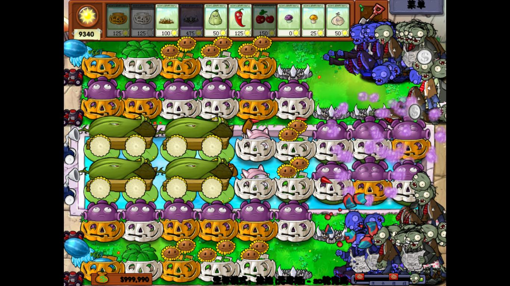

如植物大战僵尸一样精彩好玩的。
下载了个暴力摩托，可惜画面是花屏。。。
［ 掌棋宣传员 于 2010-9-17 13:03:50 时花20金币送鲜花一朵］
指挥官：征服美洲》 简体汉化版
http://www.yxdown.com/SoftView/SoftView_33532.html
［ 掌棋宣传员 于 2010-9-17 13:03:55 时花20金币送鲜花一朵］
魔塔魔塔
过关少说也要4个小时吧，策略性单机游戏
［ 掌棋宣传员 于 2010-9-17 13:04:04 时花20金币送鲜花一朵］

可以到 （游戏藏宝湾） 上面找找看 绝大部分都是经过检测的可玩绿色游戏
下午抽空玩了LZ所提到的植物大战僵尸的游戏，确实是十分精彩，不觉玩了一下午。。。。杀了僵死王
傲视天地
不花RMB也可以玩
网页游戏
恺撒大帝 造城市的
植物大战僵尸生存模式无尽版怎么过？过到19轮挂了……
回 14 楼 无尽版用 八炮流，可以百度 或者用四头枪 和火能过四五十层
问经典小游戏问我啊哈哈
他们说的都不算经典小游戏了。听我的吧，没有一个不经典
植物大战僵尸，粘粘世界，时空幻境（这个很经典，但是有难度），机械迷城（解谜类），伊特，都是超级经典的，有一个不好玩，鸡蛋伺候（旁人别砸我鸡蛋啊，，我给楼主推荐的）
［ 失落刀 于 2010-10-9 17:30:25 时花20金币送鲜花一朵］
［ 岳麓小棋后 于 2010-10-9 20:15:22 时花20金币送鲜花一朵］
伊特的下载地址，麻烦告诉下。
引用：
原文由 越狱行辕 发表于 2010-10-9 16:39:47 :回 14 楼 无尽版用 八炮流，可以百度 或者用四头枪 和火能过四五十层
问经典小游戏问我啊哈哈
他们说的都不算经典小游戏了。听我的吧，没有一个不经典
植物大战僵尸，粘粘世界，时空幻境（这个很经典，但是有难度），机械迷城（解谜类），伊特，都是超级经典的，有一个不好玩，鸡蛋伺候（旁人别砸我鸡蛋啊，，我给楼主推荐的）
［ 失落刀 于 2010-10-9 17:30:25 时花20金币送鲜花一朵］
［ 岳麓小棋后 于 2010-10-9 20:15:22 时花20金币送鲜花一朵］
要想无尽 必须搭梯子
引用：我已经无尽对无尽啦~一般来说最有效果的是八炮流打法，还有2、4、6、12炮流打法，2、4炮好难打的说~
原文由 岑小鱼 发表于 2011-2-20 10:42:53 :引用：
原文由 越狱行辕 发表于 2010-10-9 16:39:47 :回 14 楼 无尽版用 八炮流，可以百度 或者用四头枪 和火能过四五十层
问经典小游戏问我啊哈哈
他们说的都不算经典小游戏了。听我的吧，没有一个不经典
植物大战僵尸，粘粘世界，时空幻境（这个很经典，但是有难度），机械迷城（解谜类），伊特，都是超级经典的，有一个不好玩，鸡蛋伺候（旁我人别砸我鸡蛋啊，，我给楼主推荐的）
［ 失落刀 于 2010-10-9 17:30:25 时花20金币送鲜花一朵］
［ 岳麓小棋后 于 2010-10-9 20:15:22 时花20金币送鲜花一朵］
要想无尽 必须搭梯子
犰狳空间 绝对值得一玩
莫帝莫的魔法城堡 不是很难
孤胆枪手 动作小游戏
紫色小精灵 DWEEP
［此帖子已被 wrwak 在 2011-2-21 15:54:23 编辑过］
引用：
原文由 梧桐风 发表于 2011-2-21 13:34:07 :引用：
原文由 岑小鱼 发表于 2011-2-20 10:42:53 :引用：
原文由 越狱行辕 发表于 2010-10-9 16:39:47 :回 14 楼 无尽版用 八炮流，可以百度 或者用四头枪 和火能过四五十层
问经典小游戏问我啊哈哈
他们说的都不算经典小游戏了。听我的吧，没有一个不经典
植物大战僵尸，粘粘世界，时空幻境（这个很经典，但是有难度），机械迷城（解谜类），伊特，都是超级经典的，有一个不好玩，鸡蛋伺候（旁我人别砸我鸡蛋啊，，我给楼主推荐的）
［ 失落刀 于 2010-10-9 17:30:25 时花20金币送鲜花一朵］
［ 岳麓小棋后 于 2010-10-9 20:15:22 时花20金币送鲜花一朵］
要想无尽 必须搭梯子
我已经无尽对无尽啦~一般来说最有效果的是八炮流打法，还有2、4、6、12炮流打法，2、4炮好难打的说~
我打了150多轮就没兴趣继续了 第2，3，4列都搭了梯子 属于八炮流改良版 完美阵型
兄台打了几轮？
今日尝试了双头花+冰冻.单炮阵型.....居然打了几十关没有任何破绽
关键是必须在10轮之前搭好梯子....8炮流的比较随意.
另外.电脑不要太老了...杀怪的速度相对慢一些.会卡的.
大航海2我安装了后找不到登陆游戏的快捷键。
W7，64位的，请朋友推荐适合的大航海2.

1、中间两路水上很安全
2、设置2个猫主要用来对付气球僵尸
3、1列和6列的防守压力接近于0，为什么说接近于0呢？其实你都不用管的，什么时候要管呢？小丑僵尸出现的关卡要关注下，不能让小丑僵尸走的太下炸掉前面的忧郁蘑菇，那样就有防守压力了
4、真正的防守压力在2列和5列，其实压力也就是稍微大一点，用3排地刺王一直阻止，4个玉米炸弹看到刚特尔就狂轰，玉米不够用就用窝瓜、辣椒、樱桃，玩下你会发现完全够用的，真正最大的威胁还是小丑僵尸，这个窃以为破坏力是最大，有小丑僵尸出现的关卡，如果不想前功尽弃，还是备份下先
5、不用备份也行的，因为这个阵，向日葵很多的，阳光足够支持你迅速恢复阵型
LS这个阵型。我预测不能超过110轮.....
1.理由是2.3.4列没有梯子，虽然你钱多多.但是总有需要加南瓜的时候
2.第1列跟最前面的也需要加（这个任何阵型都存在）。可以忽略的一条。
3.水里最右边3列估计是忧郁菇.(被炸也需要加.任何阵型都存在）
当第3种情况跟第1种情况同时出现的时候就很危险了
［此帖子已被 岑小鱼 在 2011-4-9 13:45:21 编辑过］
［此帖子已被 岑小鱼 在 2011-4-9 13:48:10 编辑过］
首先建议搭上梯子.（不能用辣椒）
不过还有最后的顾虑：后面怪物出的很快的时候.4炮够么?
我的新尝试跟你的类似.加梯子之外只要一个大炮.其他的用冰冻..把怪冰住了慢慢杀.
缺点是怕海豚....极意外...还没到100关.不晓得到底效果如何
从不加梯子，试了下，只有小丑僵尸有点小威胁，比起八炮流那种操作上舒服多了，而且稳定性也更高
双头花.冰冻菇.忧郁菇.单炮 阵型到了40关有点压力.
于是做点小改动变成双炮....现在打到60关.压力更大了.因为怪物刷新的太快太多.
有时候会面临着没有地方放冰冻菇的尴尬.....如果没能想出什么解决方案.估计100关是极限了.
还是8炮梯子流的安全....什么东西过来都能...将它变成浮云.